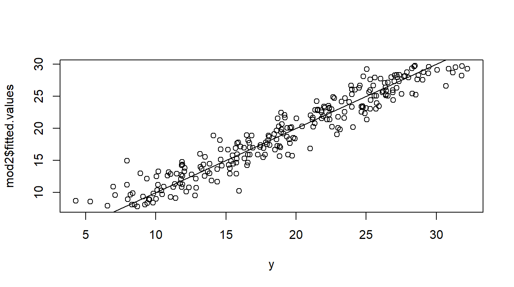
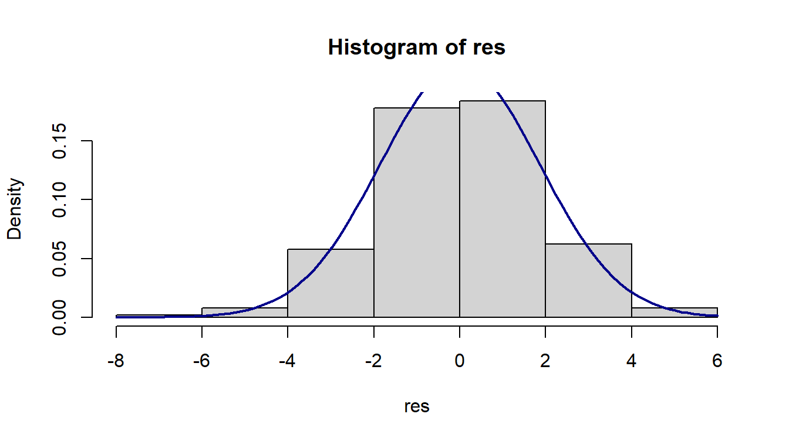

Residuals Diagnostics
Introduction
In this tutorial, we will evaluate basic residual diagnostics of a model.
Load data and estimate model
For this tutorial, we will be using the food data from PoE that can be found at http://www.principlesofeconometrics.com/poe5/poe5data.html. To make it easier to access this data, I have set up a shortened URL: http://tiny.cc/poe -data. Thus, to load food.csv into R, use the following URL: http://tiny.cc/poe-data/food.csv. We use the following code to load the data and estimate the model we will use in this tutorial.
food <- read.csv(url("http://tiny.cc/poe-data/food.csv"))
mod1 <- lm(food_exp ~ income, data = food)Fitted and residual values
Lecture
Explanition
After estimating a model, the fitted values and the residuals can be accessed via the $. The model object contains several components. In R, the components within an object can be accessed by appending a dollar sign, $, and the name of the component. Thus the following code stores fitted values, i.e. \(\hat{y}\), and the residues, \(e\).
fitted <- mod1$fitted.values
resid <- mod1$residualsActual vs Fitted Plot
Now, lets plot the actual vs fitted values of the dependent variable.
plot(x=food$food_exp,y=mod1$fitted.values)
abline(0,1)In this plot, the closer each point is to the solid line, the closer \(\hat{y}\) is to \(y\). The above figure suggests a non-linear relationship, but more on that in the next tutorial.
“Perfect” fitted and residual values
Here is an example of a actual vs fitted plot that is nearly optimal. The data has been simulated to meet all the assumptions of linear regression.

Note that the points form an even band above and below the \(\hat{y}=y\) line.
You try
Instructions
Residuals vs. Fit Plot
Lecture
Explanition
One of the best diagnostic plots is the residuals vs. fit plot. You can draw the residuals vs. fit plot with the plot() function. But a much more attractive plot can be obtained using ggplot2, which is a part of the tidyverse. The tidyverse is a group, or “ecosystem” of R packages for cleaning and visualizing data. To use the tidyverse package, we need to install and load the package.
The following code chunk test weather the tidyverse has been installed, installs the package if needed, and then loads the package. install.packages() command installs the package and the library() command loads the package. For now, you can copy this code and paste this code to use it in your own analysis.
if (!require("tidyverse")) install.packages("tidyverse")
suppressMessages(library(tidyverse))I have written a function, plot.fitted(), that you can copy an past into you analysis. You simply pass the linear model you estimated to it. Thus, for mod, you can use the following code to draw the residual vs. fit plot.
plot.fitted(mod1)Notice the cornucopia shape of the scatter plot. This is further evidence that a linear model is not the best for this data.
“Perfect” Residuals vs. Fit Plot
Here is an example of a residuals vs. fit plot that is nearly optimal. The data has been simulated to meet all the assumptions of linear regression.
plot.fitted(mod2)
Residual Plot Function
The following function takes the linear model object as an input and draws the residuals vs. fit plot. Do not worry if this function looks too complicated. Yo can simply cut and past it into your work.
plot.fitted <- function(lmod) {
df = lmod$model
title = paste("Residuals vs. Fits (Dependent Variable: ",
names(df)[1],
")",
sep = "")
pr <- df %>% ggplot(aes(x = fitted(lmod), y = resid(lmod))) +
geom_ribbon(aes(ymin = -sigma(lmod), ymax = sigma(lmod)),
fill = "gray",
alpha = .5) +
geom_ribbon(aes(ymin = -sigma(lmod)*2, ymax = sigma(lmod)*2),
fill = "lightgray",
alpha = .5) +
geom_point() +
theme_classic() +
ggtitle(title) +
ylab("Residules") +
xlab("Fitted") +
geom_hline(yintercept = 0,
linetype = "solid",
color = "black")
return(pr)
}You try
Normality of residuals
Lecture
Explanition
plot.normal(mod1)“Perfect” Residuals Histogram
plot.normal(mod2)
Normal Plot Function
plot.normal <- function(lmod) {
res <- resid(lmod)
hist(res, probability = T)
curve(
dnorm(x, mean = mean(res), sd = (sd(res))),
col = "darkblue",
lwd = 2,
add = TRUE,
yaxt = "n"
)
}You try
Instructions here
You did it!
In the next tutorial, we will learn about accessing Goodness-of-Fit. The next lesson is available here: https://logan-kelly.shinyapps.io/4-2_GoF/